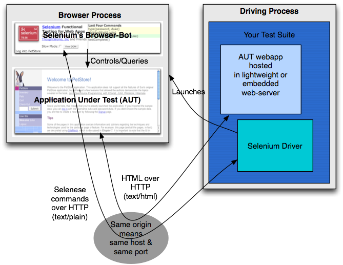
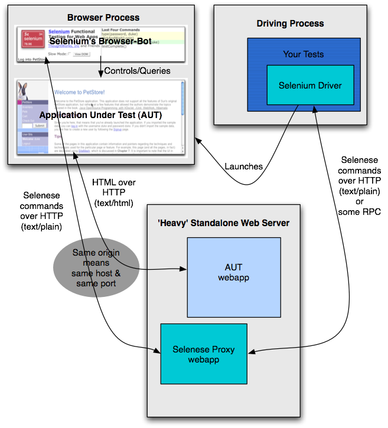

Overview
Driven Selenium is where the browser is under the the control of an
adjacent process. That process is either a Java, .Net, Ruby or Python
application and it is typically run in conjunction with a unit testing
framework like JUnit or NUnit. Also possible, is a console application
driving a browser interactively.
Selenium & Selenese
The key to this mode of operation is manner in which the browset-bot
takes instruction from the driver. If it were possible, the
browser-bot's javascript would open a server socket and await requests
from the driver. It is against the rules for browser embedded
javascript, to open ports for incoking requests as it would be a
general breach of security for the client-OS that the browser is
running on. What a browser can do is open addition requests to
the same server that its source came from. See
http://www.mozilla.org/projects/security/components/same-origin.html
for more info.
To overcome the limitations of Javascript in a browser page is the page
continuously requests pages from the driver (which has conveniently
opened a web server). The pages which are retrieved from the server are
in fact plain text and each is an individual instruction from the
driver for what the browser-bot is to do next. E.g. -
| open | /foo/bar.html | |
We refer to this architecture are reply/request rather than the more
ususal request/reply.
The test script is one that would be recognisable to people adept with
unit test frameworks :
For Java -
public void testOKClick() {
selenium.verifyTitle("First Page");
selenium.open("/TestPage.html");
selenium.click("OKButton");
selenium.verifyTitle("Another Page");
}
The difference from normal unit testing is that as part of the startup,
three major things have to happen:
- The test framework needs to publish a fresh copy of the
Application Under Test (AUT).
Selenium prefers to mount its own web server temporarily for the
purposes of testing.
- The test framework needs to publish the static Selenium pages
(refer selenium dir in TestRunner mode above) in an apparent directory
on the same web server as (1).
- The test framework needs to open a browser instance and point it
to Selenium.html served in (2) above.
As each of these isa fairly time consuming operation, it is best that
all three of those happen in a one time setup mode. As such, and
even though these leverage a unit testing framework, this is definately
for acceptance or functional testing.
Example Setup
For Java -
selenium = new DefaultSelenium("c:\foo\bar-web-app\");
The above will instantiate a web server using
Jetty, and
publish it at http://localhost:8080. The Selenium pages will appear to
be run from http://localhost:8080/selenium-driver. The default browser
for Windows, Linux or Mac will be instantiated and directed to accept
test instructions from the driver.
The above would ususally be done in a setup method if under unit test
control. See
http://junit.sourceforge.net/doc/faq/faq.htm#organize_3
for advice on one time setup for Java.
A more complex case could be -
selenium = new DefaultSelenium(new
TomcatCommandProcessor("c:\foo\bar-web-app"), new
MyOperaBrowserLauncher()),
Command Reference
void chooseCancelOnNextConfirmation();
void click(String field);
void clickAndWait(String field);
void open(String path);
void pause(int duration);
void selectAndWait(String field, String value);
void selectWindow(String window);
void setTextField(String field, String value);
void storeText(String element, String value);
void storeValue(String field, String value);
void testComplete();
void type(String field, String value);
void typeAndWait(String field, String value);
void verifyAlert(String alert);
void verifyAttribute(String element, String value);
void verifyConfirmation(String confirmation);
void verifyElementNotPresent(String type);
void verifyElementPresent(String type);
void verifyLocation(String location);
void verifySelectOptions(String field, String[]
values);
void verifySelected(String field, String value);
void verifyTable(String table, String value);
void verifyText(String type, String text);
void verifyTextPresent(String type, String text);
void verifyTitle(String title);
void verifyValue(String field, String value);
Deployment Choices
Embedded Web Server

The best way to deply the driven form of Selenium is where an embedded
web server is used. With the Java version, this could be Jetty or Tomcat.
In advance of a series of selenese instructions being issued to the
browser, a web server containing the AUT and some static pages for
Selenium itself will be programmatically started and used to
communicate selenese instructions to the browser. When the driver
process is complete the web server will be programmatically stopped.
[ For release 0.2 - this is the only
mode that really works. Those below will be fine for 0.3 and above ]
Adjacent Web Server

By adjacent we mean a process on the same machine as the driver. As
such it would appear as localhost to browsers.
For the .Net driver embedded is very unlikely as Internet Information
Server is running in its own process. For the Java driver, this could
simple be a necessary choice - i.e. the deployment target is WebLogic
or
WebSphere which are not too embeddable.
In this scenario we suggest you deploy a small web-app alongside the
AUT that will liase between the driver process and the browser. Of
course, there is less fine grained control over the starting and
stopping of the server and indeed the version of the AUT. If the web
server supports it, it is best to copy a fresh version of the AUT to
the underlying directory that the web-app is mapped to. We call the
small web-app the selenese proxy. It does of course slow things down a
fraction.
Selenese-proxy
If you can deploy a copy of the selenese proxy to remote web server,
and configure it to forward requests to your machine, then you can
essentially script that remote web app. The downside of this is that
that remote machine can essentially only be driven from the machine
that is configured to drive it. i.e. it would need to be reconfigured
to be driven from elsewhere. The upside is that you can to a great
extent mix and match your technologies to achieve this proxying (a Java
driver could use a Python selenese-proxy script a web-app).
Nearby Web Server
This is where the AUT is running on a nearby testing stack or dedicated
development box (not the developer's own workstation).
To achieve this the selenese proxy needs to be deployed again, this
time to that nearby machine. It will need to be reconfigured to
indicate that selenese traffic is either forwarded to a particular
machine.
Remote Web Server
This is where the AUT is running on a remote machine, which you have no
control over. A good example would be www.google.com. It is
worth pointing out that this is of more interest to hackers or data
harvesters than testing professionals, as what self respecting
development group would prevent you from deploying at least the
Selenese Proxy webapp to a testing stack.
Funnel
We are writing an application called the funnel that can help us
overcome the
same
origin issue that is key to Selenium. It essentially makes a
selenium-driver/ directory appear on a remote web site for the purposes
of the browser.